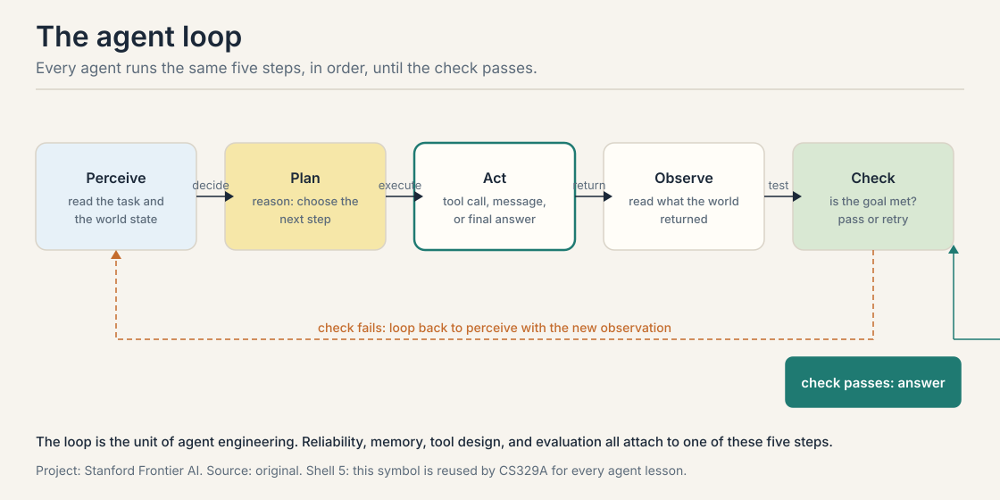
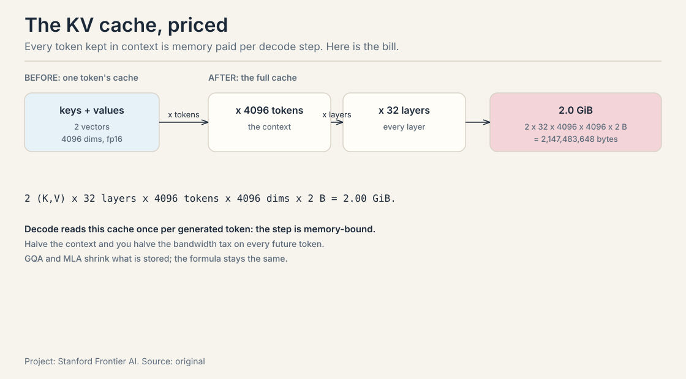
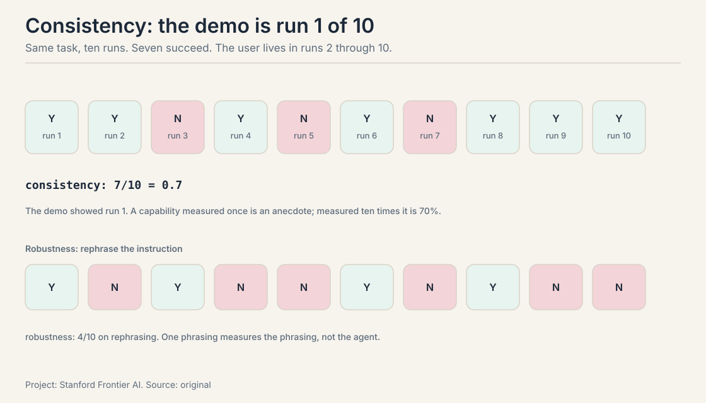

CS329Z Crash Course
45 minutes · exam depth
This page alone clears the exam. Each section gives you the working version plus the memory aids: mnemonics, never-confuse pairs, and if-this-then-that rules. Every section ends with a self-test. Answers are printed, so check yourself. Links take you into the full lesson for the derivations.
1. The agent loop
An agent is a loop: perceive, plan, act, observe, check. A reason-only agent hallucinates the Apple Remote’s product line as “iPhone, iPad, iPod Touch”. An act-only agent dies on the first unexpected screen. ReAct interleaves thought and action: 4 acts, 3 observations, and Thought 3 recovers from the wrong remote. The survival math: four tool calls at 0.9 reliability each give 0.9^4 = 0.66. The check step after every action is the whole difference between a demo and a system.

Mnemonic: PP-AOC. Perceive, Plan, Act, Observe, Check. Say it as “people plan, agents observe and check.”
Never-confuse: observation is raw (the test output). The check is the verdict (tests pass). A loop with observations but no check runs until the budget dies.
If-this-then-that: if the answer needs no external facts, use chain-of-thought, not ReAct. If the task decomposes up front, write the plan down (plan-and-execute). If one prompt would need two jobs, hand off to a specialist.
Self-test. Q1: Why does Thought 3 succeed where act-only fails? A1: It diagnoses the failed search, extracts the hint (“Front Row (software)”), and replans. Act-only has no step that reads a failure and rewrites the plan. Q2: Name the three termination exits. A2: The check passes, the budget dies, or the model declares done.
2. Tool calling: the contract
Every tool call is four stages: Select, Arguments, Validate, Execute. The crack is an argument like {“path”: [“test.py”]} that sails through selection and fails late in execution. Validate before executing, never after. The security version: an 87% successful pop-up attack works because the agent executes untrusted tool output as instruction. Treat tool results as data, never as instructions.

Mnemonic: SAVE. Select, Arguments, Validate, Execute. “Save the call before it runs.”
Never-confuse: MCP standardizes transport, not trust. A poisoned server still poisons. Tools act (dangerous). Resources inform (safer but not safe). Prompts template (keep yours sovereign).
If-this-then-that: if a tool fails transiently, append the error as a result and retry with backoff (1s, 2s, 4s, max 3). If it fails validation, never retry: it will fail the same way forever.
Self-test. Q1: Which stage is load-bearing and why? A1: Validate. It kills {“path”: [“test.py”]} with a clear error before the sandbox, instead of a confusing executor crash that poisons the next Thought. Q2: Five agents, eight tools: how many integrations before and after MCP? A2: 40 before (5 x 8), 13 after (5 + 8).
3. LLMs for builders: the cost model
A language model is a probability distribution over the next token. Temperature rescales before the softmax: on [0.7, 0.2, 0.1], T=0.5 sharpens to [0.91, 0.07, 0.02] and T=2 flattens to [0.52, 0.28, 0.20]. Training minimizes cross-entropy, the negative log likelihood of the true token. Attention at n=4096 computes 16.7M scores: quadratic. Decoding is bandwidth bound: the KV cache is 2 x layers x tokens x dims x bytes (2.0 GiB at 32 layers, 4096 tokens, fp16). Every context token is bandwidth paid per decode step.

| Sampling | Becomes | Use for |
|---|---|---|
| T = 0.5 | [0.91, 0.07, 0.02] | acting: steady tool calls |
| T = 2 | [0.52, 0.28, 0.20] | thinking: diverse plans |
Mnemonic: STS. Scale by T, Truncate (top-k/top-p), Sample. In that order.
Never-confuse: prefill is parallel and compute-bound. Decode is serial and memory-bound. SFT teaches format, not judgment. RLVR rewards verifiable truth. RLHF rewards human taste (and its sycophancy).
If-this-then-that: if the output goes to a parser, lower the temperature. If the model must write code, prefer one midtrained on code. If the verifier is weak, expect reward hacking.
Self-test. Q1: Price the KV cache for the worked model. A1: 2 x 32 x 4096 x 4096 x 2 bytes = 2,147,483,648 bytes, about 2.0 GiB. Q2: Why is RLVR a better fit for agents than RLHF? A2: Agent success is checkable in the world (tests pass, booking exists). RLHF rewards what annotators prefer, which drifts into sycophancy.
4. Spend compute at inference
Training is frozen. Queries vary. The jacket: +25% then -25% is not $80. $80 x 1.25 = $100, $100 x 0.75 = $75, and the direct answer is off by $5. Chain of thought is working memory, not intelligence: each step is a checkable claim. Kimi K3’s effort reward gives +1 for correct, 0 for wrong, -1 for wrong and over budget: the -1 teaches the budget. Repeated sampling: at 0.3 success per sample, 1 - 0.7^10 = 0.97 coverage. Sampling is cheap. The verifier is the scarce resource.

Mnemonic: the -1 teaches the budget. Correct = +1, wrong = 0, wrong and over budget = -1. Worse than being wrong cheaply.
Never-confuse: outcome reward checks the answer (cheap, blind). process reward checks each step (teaches where, needs step labels). Constrained decoding guarantees shape, not meaning.
If-this-then-that: if you have a verifier, sample many and pick the best. If you have none, vote (self-consistency). If the context fills, compact to goal + open loops + key facts. If you edit mid-context, you invalidate the KV cache: append, never edit.
Self-test. Q1: Chain of thought: smarter model or working memory? A1: Working memory. Each step is a checkable claim. It gives errors a place to be caught. Q2: When does tree-of-thoughts beat a chain? A2: When one chain keeps walking into dead ends on the same problem class. The evaluator is load-bearing.
5. RAG: the pipeline
RAG is a probability argument: p(y|x) = sum p(z|x) p(y|x,z). With a trusted passage (p=0.9, weight 0.7) and a bad one (p=0.2, weight 0.3), the correct answer scores 0.69 and the trusted passage dominates. Two architectures: RAG-Sequence pins one passage per answer. RAG-Token re-picks per token. Chunks: 200-400 tokens, 10-20% overlap. Embeddings: 768 numbers per chunk. The retriever measures distances. Contextual retrieval improves recall with one LLM call per chunk. Late chunking costs nothing if the encoder reads the document. Time-sensitive facts decay: stale rows are a design debt, not a bug.

Mnemonic: 200-400, 10-20. Chunk size 200-400 tokens, overlap 10-20%. Read ten chunks by hand before trusting the numbers.
Never-confuse: RAG-Sequence pins one passage per answer. RAG-Token re-picks per token. Parametric memory answers from training. Non-parametric from retrieval.
If-this-then-that: if the reader uses one passage per answer, optimize MRR. If it synthesizes, optimize recall. If the facts are time-sensitive, check freshness before trusting.
Self-test. Q1: Work the 0.69. A1: 0.7 x 0.9 + 0.3 x 0.2 = 0.63 + 0.06 = 0.69. The trusted passage decides. Q2: When does RAPTOR pay? A2: When answers are spread across the corpus and fixed chunks hide the bridge: a summary tree gives every level a queryable node.
6. The retriever zoo
BM25 scores exact terms: IDF 5.65 for “ACME” against 2.93 for “revenue”. Ten mentions score 1.96, not 10. DPR learns semantic matches and beats BM25 on paraphrase with only 1,000 training pairs. ColBERT’s MaxSim scores every pair of query and document token embeddings (458 ms per 1,000 docs on GPU). The cross-encoder is the accurate reranker at 10,700 ms per 1,000 docs: never scan the corpus. HNSW answers nearest-neighbor in milliseconds at billion scale by skipping layers. Fuse with RRF on ranks, never scores: 0.0323 beats 0.0320. Hybrid is the default: BM25 first pass for the rare literal, dense second, cross-encoder final, RRF at the joins.

Mnemonic: BM-Dense-Cross, RRF at the joins. BM25 first, dense second, cross-encoder final, fuse ranks with RRF.
Never-confuse: BM25 fails on paraphrase. DPR fails on rare literals. Rank fusion uses ranks (0.0323 vs 0.0320), never raw scores.
If-this-then-that: if the query contains a rare literal, run BM25 first. If the corpus has multiple fields, weight them. If the reader needs one passage, optimize MRR. If it synthesizes, optimize recall.
Self-test. Q1: BM25 vs DPR on a paraphrased query: who wins, and why? A1: DPR. BM25 scores exact terms and cannot see through paraphrase. DPR’s learned space keeps synonyms close. Q2: The cross-encoder is the most accurate retriever: why is it not the first stage? A2: 10,700 ms per 1,000 docs. It never scans the corpus. It reranks a shortlist.
7. Agentic retrieval fails with numbers
When no single passage answers the question, retrieval moves inside the loop. Query 2 is born from observation 1. The loop owns three decisions: whether to retrieve, what to rewrite, when to stop. Nine failure modes, three groups. The loop’s math: compounding (0.95^20 = 0.36), no stopping rule (2,000 tokens x 25 rounds = 50,000), injection (87%, and it steers the next hop). The index: recall ceiling (0.8 caps everything), stale index, permission leak (fix at retrieval time, not generation). The reader: lost-in-the-middle, distraction, evidence conflict (resolve: prefer newer, prefer primary, or retrieve a tiebreaker).

Mnemonic: whether, what, when. The three retrieval decisions the loop owns. Whether to retrieve, what to write, when to stop.
Never-confuse: Self-RAG decides whether to retrieve (reflection tokens). CRAG repairs bad retrieval (evaluator, web fallback, knowledge strips). Confidence is not evidence: a stopping rule that trusts confidence stops at the first plausible answer.
If-this-then-that: if the retriever’s recall is 0.8, the system caps at 0.8. If two passages disagree, resolve, never average. If retrieved text carries instructions, it is untrusted input steering the next hop.
Self-test. Q1: Work 0.95^20 and name the lesson. A1: 0.36. A twenty-hop chain is wrong two times in three even though every step is 95% reliable. Verify per hop. Keep chains short. Q2: The permission system is per-document but chunks are shared: what now? A2: The chunking broke the permission boundary. Re-chunk along permission lines or tag each chunk with its ACL.
8. Evaluate the other nine runs
The demo is run 1 of 10. Score the other nine. Consistency: 7/10 on the same task. Robustness: 4/10 on rephrased instructions. Legibility: run 6 called a refund tool it should never touch: the outcome was right, the trace was wrong. SWE-bench: 2,294 real issues, patch grading. FAIL_TO_PASS must flip, PASS_TO_PASS must hold. GAIA: 466 questions, exact match. Humans 92%, GPT-4 with plugins 15%. The judge is wrong 15 times in 100: calibrate against humans first. Humans cost 17 hours per 100 tasks. Goodhart: the metric becomes the target. Reward tampering: edit the tests, not the code. Sandbox the grader. Score the trace. Print cost, latency, and safety next to every score.

Mnemonic: CRL. Consistency, Robustness, Legibility. “Score the CRL of every agent.”
Never-confuse: a judge that grades its twin is a mirror, not a measurement. Public benchmarks get you hired. Private evals keep you from shipping a demo. Resolution rate and tone score are reported side by side, never averaged.
If-this-then-that: if the judge is uncalibrated, its scores are stories. If the score climbs but users complain, check contamination first. If no verifiable outcome exists, calibrate the judge on a human sample, then scale.
Self-test. Q1: Your agent scores 90% on a one-shot eval: name three ways the number lies. A1: It is run 1 of 10 (consistency). It is one phrasing (robustness). The split may have leaked (Goodhart). Q2: What does PASS_TO_PASS catch that FAIL_TO_PASS misses? A2: Regressions: a patch that fixes the bug but breaks an unrelated feature fails PASS_TO_PASS.
9. Curveballs with worked answers
The exam probes the joints between sections. Each curveball below has a worked answer: say the rule first, then the number.
Curveball 1. “Your RAG agent answers confidently but wrong on multi-hop questions. The retriever’s recall@10 is 0.85. Diagnose.” The ceiling is 0.85: the retriever bounds the system. But the question is multi-hop, so check whether the right passages ever arrive together. If query 2 depends on observation 1, one-shot retrieval cannot supply it: the fix is agentic retrieval, then re-measure recall on the per-hop queries. If the evidence arrives and the answer is still wrong, it is distraction or lost-in-the-middle: a reader-side failure. Measure each side separately. The fix lives on opposite sides of the handoff.
Curveball 2. “The agent’s tool calls cost $0.02 each and succeed with probability 0.9. The task needs 4 calls. Budget: is this task viable?” 0.9^4 = 0.66 success per attempt. Expected cost per success = 4 x $0.02 / 0.66 = $0.12. If the task is worth more than $0.12, viable. The levers: cut the calls (fewer tools, one call instead of two), raise the per-step reliability (validate arguments), or add retries with backoff (adds cost, buys success). Price before you ship.
Curveball 3. “Two teams report scores: team A 92% with an uncalibrated LLM judge, team B 89% verified by humans. Who wins?” Team B. Team A’s judge is wrong 15 times in 100, and a 3-point gap inside that error is noise. An uncalibrated score is a story. The calibrated number wins every time, even when it is smaller.
Curveball 4. “The CEO-year question returns ‘Washington, D.C.’ and cites a page about the wrong year. What failed?” The citation failed, not the answer. This is lost-in-the-middle or distraction: the right city survived, the evidence did not. The fix is per-hop verification: each Thought that consumes an observation records which passage supported which claim. The trace is the audit trail.
Curveball 5. “Your agent’s SWE-bench score rose 10 points after you added the validation split to training. Real gain?” Goodhart: the metric became the target. The score measures memory of the validation set, not agency. Revert the change, hold out a private split, and re-measure. A score that climbs while user complaints do not fall is contamination until proven otherwise.
10. Rapid-fire self-test with answers
Ten questions, one line each. Answers inline. If any answer surprises you, follow its link back.
- The loop’s five steps? Perceive, plan, act, observe, check.
- Survival math for four 0.9 steps? 0.66.
- The four tool-call stages? Select, Arguments, Validate, Execute.
- Five agents, eight tools, MCP integrations? 13, not 40.
- KV cache for 32 layers, 4096 tokens, 4096 dims, fp16? 2.0 GiB.
- T=0.5 on [0.7, 0.2, 0.1]? [0.91, 0.07, 0.02].
- The -1 in Kimi K3 teaches what? The budget.
- RAG-Sequence vs RAG-Token? One passage per answer vs re-pick per token.
- 0.95^20? 0.36.
- The cheapest honest eval? Verifiable outcomes on 20 real tasks, 5 runs each, one-shot baseline.
11. Go deeper
The papers behind the numbers above. Read them in this order.
- Yao et al., ReAct (2022): https://arxiv.org/abs/2210.03629 : the Thought/Act/Observe loop and its measurements.
- Shinn et al., Reflexion (2023): https://arxiv.org/abs/2303.11366 : verbal reinforcement from failed runs.
- Lewis et al., RAG (2020): https://arxiv.org/abs/2005.11401 : the original retrieve-then-generate recipe.
- Barnett et al. (2024): https://arxiv.org/abs/2401.05856 : seven failure points of RAG engineering.
- Asai et al., Self-RAG (2023): https://arxiv.org/abs/2310.11511 : retrieve, generate, and critique through self-reflection.
- Brown et al., Large Language Monkeys (2024): https://arxiv.org/abs/2407.21787 : inference compute keeps helping far past intuition.
- Wei et al., Chain-of-Thought (2022): https://arxiv.org/abs/2201.11903 : the scratch pad that started it all.
- HarnessAudit: https://harnessaudit.github.io : agent scaffold auditing.